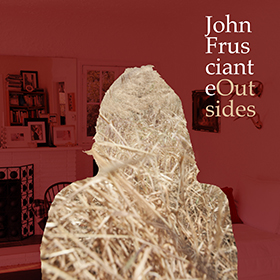

Nowa EPka Johna wyciekła do sieci niemal trzy tygodnie przed jej japońską premierą. Można jej przesłuchać na kanale użytkownika AtTheCoachellaIn na Youtube.Przypominamy, że premiera „Outsides” odbędzie się 14 sierpnia w Japonii i 27 na całym świecie. Zawierać ma odniesienia do free jazzu, a także 10-minutową solówkę.
Odsłuch dostępny tutaj.
Co sądzicie o nowej muzyce Johna? Dociera do Was to co Fru stworzył tym razem?